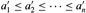

|
|
< Day Day Up > |
|
What are algorithms? Why is the study of algorithms worthwhile? What is the role of algorithms relative to other technologies used in computers? In this chapter, we will answer these questions.
Informally, an algorithm is any well-defined computational procedure that takes some value, or set of values, as input and produces some value, or set of values, as output. An algorithm is thus a sequence of computational steps that transform the input into the output.
We can also view an algorithm as a tool for solving a well-specified computational problem. The statement of the problem specifies in general terms the desired input/output relationship. The algorithm describes a specific computational procedure for achieving that input/output relationship.
For example, one might need to sort a sequence of numbers into nondecreasing order. This problem arises frequently in practice and provides fertile ground for introducing many standard design techniques and analysis tools. Here is how we formally define the sorting problem:
Input: A sequence of n numbers 〈a1, a2, ..., an〉.
Output: A permutation (reordering) of the input sequence such that .
For example, given the input sequence 〈31, 41, 59, 26, 41, 58〉, a sorting algorithm returns as output the sequence 〈26, 31, 41, 41, 58, 59〉. Such an input sequence is called an instance of the sorting problem. In general, an instance of a problem consists of the input (satisfying whatever constraints are imposed in the problem statement) needed to compute a solution to the problem.
Sorting is a fundamental operation in computer science (many programs use it as an intermediate step), and as a result a large number of good sorting algorithms have been developed. Which algorithm is best for a given application depends on-among other factors-the number of items to be sorted, the extent to which the items are already somewhat sorted, possible restrictions on the item values, and the kind of storage device to be used: main memory, disks, or tapes.
An algorithm is said to be correct if, for every input instance, it halts with the correct output. We say that a correct algorithm solves the given computational problem. An incorrect algorithm might not halt at all on some input instances, or it might halt with an answer other than the desired one. Contrary to what one might expect, incorrect algorithms can sometimes be useful, if their error rate can be controlled. We shall see an example of this in Chapter 31 when we study algorithms for finding large prime numbers. Ordinarily, however, we shall be concerned only with correct algorithms.
An algorithm can be specified in English, as a computer program, or even as a hardware design. The only requirement is that the specification must provide a precise description of the computational procedure to be followed.
Sorting is by no means the only computational problem for which algorithms have been developed. (You probably suspected as much when you saw the size of this book.) Practical applications of algorithms are ubiquitous and include the following examples:
The Human Genome Project has the goals of identifying all the 100,000 genes in human DNA, determining the sequences of the 3 billion chemical base pairs that make up human DNA, storing this information in databases, and developing tools for data analysis. Each of these steps requires sophisticated algorithms. While the solutions to the various problems involved are beyond the scope of this book, ideas from many of the chapters in this book are used in the solution of these biological problems, thereby enabling scientists to accomplish tasks while using resources efficiently. The savings are in time, both human and machine, and in money, as more information can be extracted from laboratory techniques.
The Internet enables people all around the world to quickly access and retrieve large amounts of information. In order to do so, clever algorithms are employed to manage and manipulate this large volume of data. Examples of problems which must be solved include finding good routes on which the data will travel (techniques for solving such problems appear in Chapter 24), and using a search engine to quickly find pages on which particular information resides (related techniques are in Chapters 11 and 32).
Electronic commerce enables goods and services to be negotiated and exchanged electronically. The ability to keep information such as credit card numbers, passwords, and bank statements private is essential if electronic commerce is to be used widely. Public-key cryptography and digital signatures (covered in Chapter 31) are among the core technologies used and are based on numerical algorithms and number theory.
In manufacturing and other commercial settings, it is often important to allocate scarce resources in the most beneficial way. An oil company may wish to know where to place its wells in order to maximize its expected profit. A candidate for the presidency of the United States may want to determine where to spend money buying campaign advertising in order to maximize the chances of winning an election. An airline may wish to assign crews to flights in the least expensive way possible, making sure that each flight is covered and that government regulations regarding crew scheduling are met. An Internet service provider may wish to determine where to place additional resources in order to serve its customers more effectively. All of these are examples of problems that can be solved using linear programming, which we shall study in Chapter 29.
While some of the details of these examples are beyond the scope of this book, we do give underlying techniques that apply to these problems and problem areas. We also show how to solve many concrete problems in this book, including the following:
We are given a road map on which the distance between each pair of adjacent intersections is marked, and our goal is to determine the shortest route from one intersection to another. The number of possible routes can be huge, even if we disallow routes that cross over themselves. How do we choose which of all possible routes is the shortest? Here, we model the road map (which is itself a model of the actual roads) as a graph (which we will meet in Chapter 10 and Appendix B), and we wish to find the shortest path from one vertex to another in the graph. We shall see how to solve this problem efficiently in Chapter 24.
We are given a sequence 〈A1, A2, ..., An〉 of n matrices, and we wish to determine their product A1 A2 An. Because matrix multiplication is associative, there are several legal multiplication orders. For example, if n = 4, we could perform the matrix multiplications as if the product were parenthesized in any of the following orders: (A1(A2(A3A4))), (A1((A2A3)A4)), ((A1A2)(A3A4)), ((A1(A2A3))A4), or (((A1A2)A3)A4). If these matrices are all square (and hence the same size), the multiplication order will not affect how long the matrix multiplications take. If, however, these matrices are of differing sizes (yet their sizes are compatible for matrix multiplication), then the multiplication order can make a very big difference. The number of possible multiplication orders is exponential in n, and so trying all possible orders may take a very long time. We shall see in Chapter 15 how to use a general technique known as dynamic programming to solve this problem much more efficiently.
We are given an equation ax ≡ b (mod n), where a, b, and n are integers, and we wish to find all the integers x, modulo n, that satisfy the equation. There may be zero, one, or more than one such solution. We can simply try x = 0, 1, ..., n - 1 in order, but Chapter 31 shows a more efficient method.
We are given n points in the plane, and we wish to find the convex hull of these points. The convex hull is the smallest convex polygon containing the points. Intuitively, we can think of each point as being represented by a nail sticking out from a board. The convex hull would be represented by a tight rubber band that surrounds all the nails. Each nail around which the rubber band makes a turn is a vertex of the convex hull. (See Figure 33.6 on page 948 for an example.) Any of the 2n subsets of the points might be the vertices of the convex hull. Knowing which points are vertices of the convex hull is not quite enough, either, since we also need to know the order in which they appear. There are many choices, therefore, for the vertices of the convex hull. Chapter 33 gives two good methods for finding the convex hull.
These lists are far from exhaustive (as you again have probably surmised from this book's heft), but exhibit two characteristics that are common to many interesting algorithms.
There are many candidate solutions, most of which are not what we want. Finding one that we do want can present quite a challenge.
There are practical applications. Of the problems in the above list, shortest paths provides the easiest examples. A transportation firm, such as a trucking or railroad company, has a financial interest in finding shortest paths through a road or rail network because taking shorter paths results in lower labor and fuel costs. Or a routing node on the Internet may need to find the shortest path through the network in order to route a message quickly.
This book also contains several data structures. A data structure is a way to store and organize data in order to facilitate access and modifications. No single data structure works well for all purposes, and so it is important to know the strengths and limitations of several of them.
Although you can use this book as a "cookbook" for algorithms, you may someday encounter a problem for which you cannot readily find a published algorithm (many of the exercises and problems in this book, for example!). This book will teach you techniques of algorithm design and analysis so that you can develop algorithms on your own, show that they give the correct answer, and understand their efficiency.
Most of this book is about efficient algorithms. Our usual measure of efficiency is speed, i.e., how long an algorithm takes to produce its result. There are some problems, however, for which no efficient solution is known. Chapter 34 studies an interesting subset of these problems, which are known as NP-complete.
Why are NP-complete problems interesting? First, although no efficient algorithm for an NP-complete problem has ever been found, nobody has ever proven that an efficient algorithm for one cannot exist. In other words, it is unknown whether or not efficient algorithms exist for NP-complete problems. Second, the set of NP-complete problems has the remarkable property that if an efficient algorithm exists for any one of them, then efficient algorithms exist for all of them. This relationship among the NP-complete problems makes the lack of efficient solutions all the more tantalizing. Third, several NP-complete problems are similar, but not identical, to problems for which we do know of efficient algorithms. A small change to the problem statement can cause a big change to the efficiency of the best known algorithm.
It is valuable to know about NP-complete problems because some of them arise surprisingly often in real applications. If you are called upon to produce an efficient algorithm for an NP-complete problem, you are likely to spend a lot of time in a fruitless search. If you can show that the problem is NP-complete, you can instead spend your time developing an efficient algorithm that gives a good, but not the best possible, solution.
As a concrete example, consider a trucking company with a central warehouse. Each day, it loads up the truck at the warehouse and sends it around to several locations to make deliveries. At the end of the day, the truck must end up back at the warehouse so that it is ready to be loaded for the next day. To reduce costs, the company wants to select an order of delivery stops that yields the lowest overall distance traveled by the truck. This problem is the well-known "traveling-salesman problem," and it is NP-complete. It has no known efficient algorithm. Under certain assumptions, however, there are efficient algorithms that give an overall distance that is not too far above the smallest possible. Chapter 35 discusses such "approximation algorithms."
Give a real-world example in which one of the following computational problems appears: sorting, determining the best order for multiplying matrices, or finding the convex hull.
Other than speed, what other measures of efficiency might one use in a real-world setting?
Select a data structure that you have seen previously, and discuss its strengths and limitations.
|
|
< Day Day Up > |
|